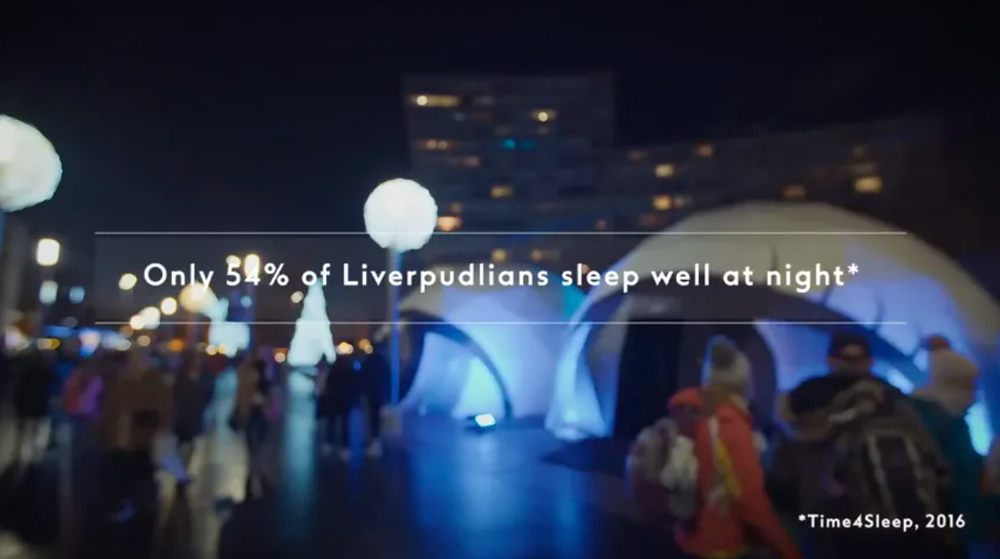
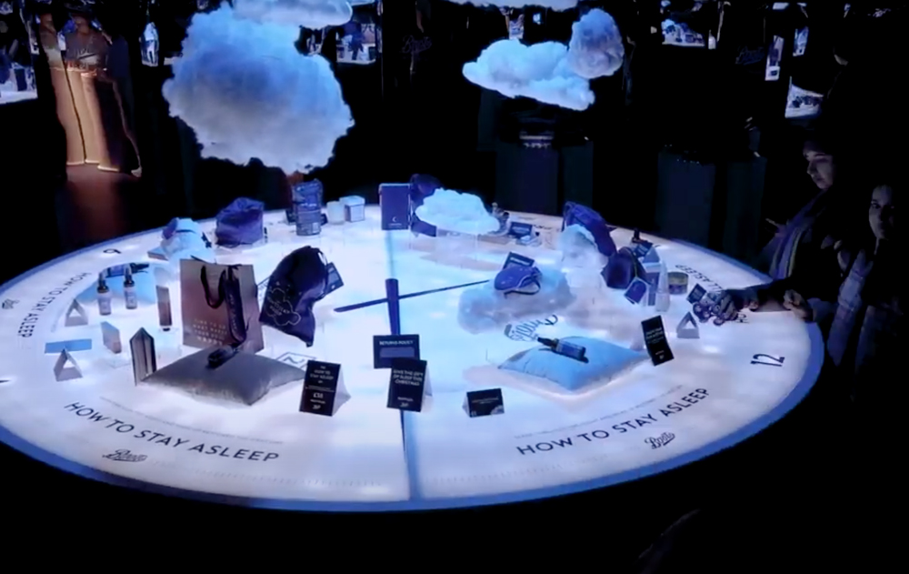
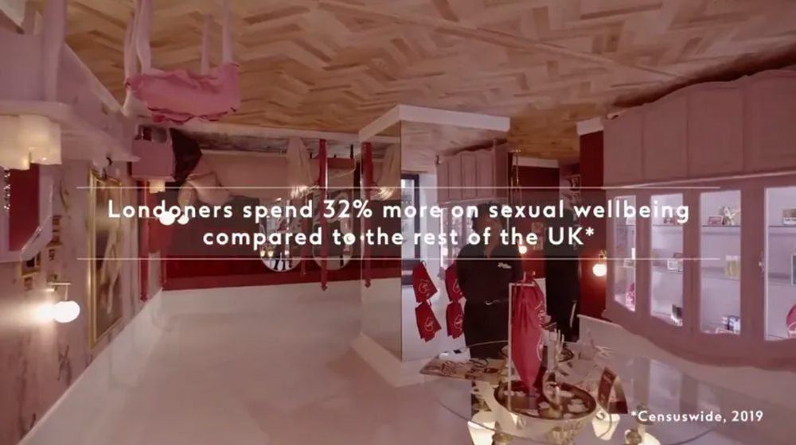
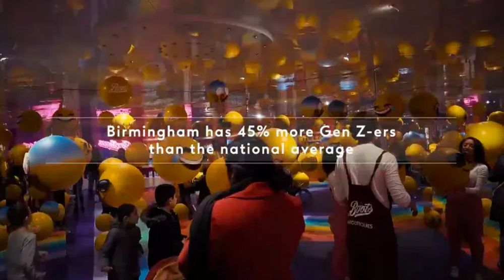

TODAY'S TOPIC
"市民性"に合わせたポップアップショップ
イギリスの小売店・Bootsが考えたポップアップショップのご紹介をします。Bootsはイギリスの3大都市（ロンドン・バーミンガム・リバプール）に、それぞれの街の「市民性」を反映したポップアップストアをオープンしました。

img source -(https://predge.jp/188190/)
「市民全体の54%しか安眠出来ていない」という調査結果が出たリバプールでは、より上質な睡眠体験を味わうことのできるグッズを専門に取り揃えた売り場をオープン。ちょっと上の画像はぼやけてしまっていますが、かまくらのような建物の中に販売スペースが設けられています。

img source -(https://predge.jp/188190/)
枕や、睡眠時にリラックスできるアロマなどが販売されているようですね。なんだか眠くなりそうな店内です。。


img source -(https://predge.jp/188190/)
「全国平均より性的幸福度が32%高い」という調査結果の出たロンドンでは、幸福度を感じられる洗練されたラブグッズを専門に取り揃えた売り場を、「全国平均よりティーンエージャーとZ世代の割合が45%多い」いう調査結果が出たバーミンガムでは、ティーン向けのポップなギフトに特化した売り場をオープン。
「相手に喜んでもらえるギフトがなかなか見つからない」という消費者のインサイトをもとにbootsはこの企画を行ったそうです。プレゼントを選ぶのって難しいですよね。ネットで「プレゼント おしゃれ 20代」とかで調べても、記事はあるけどなんかこれじゃない感。。そんな時、ちょっ狭いターゲティングでプレゼントの提案をしてくれるのは嬉しいですね。